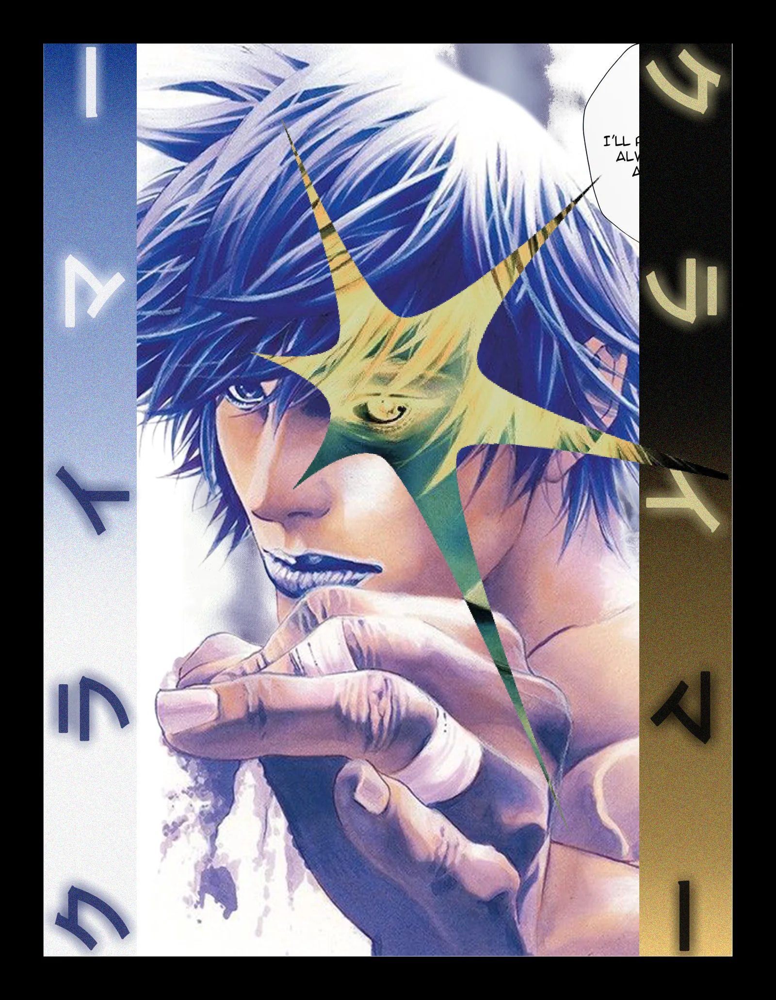

← Projets/Projet perso/Ascension
Ascension
L’imageSurvole pour la loupe · clic = plein écran

Projets perso2 fan-arts · 1 même signature
PaletteClic pour copier
Astuce : ← → pour passer d'un projet à l'autre

← Projets/Projet perso/Ascension

Astuce : ← → pour passer d'un projet à l'autre